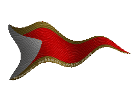
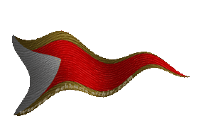

|

|
Das schwarze Brett
|
|
| Übersicht,
Anschläge und Stammtisch (RPG) |
|
Bekenntnis
|
wollium v. glänzenen wolfstern
  |
*Ein Hohepriester in der Gewandung eines Verkünders des Glaubens Tura kommt auf den Platz und baut einen kleinen Altar auf mit den Zeichen Turas. Auf dem Altar ist auch noch Platz für die anderen Zeichen der Lichtsieben.*
Ich, Wollium v. glänzenen Wolfstern bekenne mich hier vor allen zu den Lichtsieben und deren Weisheit. Mögen die Götter mich schützen vor dem Dunkel
*Er setzt sich dann im Schneidersitz vor den Altar*
((Störenfriede werden durch Sicherheitskräfte vom Platz entfernt ))
Hohepriester Wollium v. glänzenen Wolfstern,
Vorsteher von Wolfsglut,
Hohepriester im Dienste des einzig wahren Glaubens an Tura
Verkünder des Glaubens an Tura
Zur 2. Stunde am 72.Erntemond im Jahre 443 |
30.09.10 19:56
 |
|
| Shâna Carnesîr (RIP) |
<Auch Shâna, welche sich schon eine Weile zuhörend in der Nähe befand, tritt nach vorne zu Wolliums Alter, lässt sich zu Boden nieder.
Nicht im Schneidersitz, aber doch auf Knien und auf ihren Fersen sitzend>
Ich, Shâna Carnesîr bekenne mich hier vor allen Anwesenden zu den Lichtsieben und deren Weisheiten.
Mögen die Götter mich vor dem Dunkel schützen!
<"Auch wenn ich mit so manchem Urteil nicht konform gehe"
murmelt sie leise vor sich hin, während sie ihren Blick über die Menge schweifen lässt>
Hohepriesterin Shâna Carnesîr,
Vorsteherin von Moonlight,
Hohepriesterin im Dienste des einzig wahren Glaubens an Pheron,
Anführerin der glorreichen Nation "Said Ýr",
Legionärin Pherons,
Verlobte des ehrenwerten Miesmuschel,
Vertretende Befehlshaberin der Legion Pherons
Zur 2. Stunde am 72.Erntemond im Jahre 443 |
30.09.10 20:03
|
|
| asteria (RIP) |
Ein Kardinal in grüner Kleidung, als Zeichen Larjas, kommt aus dem Wald, bis direkt vor den Altar und stellt die Zeichen Larjas neben die von Tura.
Ich, asteria bekenne mich hier vor allen Zuschauern zu den Lichtsieben, zu ihren Regeln und Gesetzen.
Ich bitte die Lichtsieben um ihr Wohlwollen für alle irrgeführten Seelen. Ich bitte für mich, um den Schutz vor dem Dunkel.
Nach der kleinen Andacht am Altar setzt sich der Kardinal neben Wollium v. glänzenen Wolfstern.
Kardinal asteria,
Vorsteher von Pforte zu Loh,
Kardinal im Dienste des einzig wahren Glaubens an Larja
Zur 3. Stunde am 72.Erntemond im Jahre 443 |
30.09.10 20:15
|
|
| Misaki von der Gaukelbeere (RIP) |
i]*Ein Trupp von 14Leuten von denen 2Zwerge, 2Menschen und der Rest Halblinge sind geht auf den Platz, die Führerin des Trupps, eindeutig nicht Enit und nicht Misaki sondern eine Kriegerin*
Ich Tiffi Gemüsefuß,
habe heute die Ehre für das Volk der Sumpfländer zu sprechen, auch wenn einige strauchelten, so bekennen auch wir uns nach wie vor zum Licht, möge das Licht brennen wie eine Fackel die auch nicht erlischt wenn der Sturm aufkommt.
13 der 14 Fallen auf die Knie doch die 14. Verhüllt in einen Umhang bleibt stehen und sieht dem treiben zu. "Ich bin mir nicht sicher ob mein Gewissen rein genug ist mich hier zu bekennen, habe ich doch Schuld auf mich geladen, die Schuld zu hassen, die Schuld dunkle Gefühle zuzulassen." murmelt sie halblaut und geht.
Lady Enit Creiddylad,
Vorsteherin von Ausgrabungsstätte Nordlicht
Zur 4. Stunde am 72.Erntemond im Jahre 443 |
30.09.10 20:29
|
|
| Felerian (RIP) |
*bahnt sich den weg durch die menge und tritt vor den aufgebauten altar.dort legt er ein grosses pergament ab,auf dem 7 bildnisse zu sehen sind. es sind die bildnisse, eines jeden gottes der lichtsieben.in deren mitte legt er ein kreuz aus zwei rosen. einer weissen,für die freundschaft und einer roten für die liebe. dann legt er auf jede ecke des pergamentes,einen kleinen stein,damit dieses nicht vom winde weg geweht wird.danach dreht er sich um,verneigt sich vor asteria und sagt mit fester,lauter stimme*
ich bekenne mich zu den lichtsieben,ihren regeln und gesetzen und bitte um vergebung und frieden,für alle, welche fehlgeleitet wurden.
*verneigt sich erneut vor asteria und verlässt dann den bereich des altares und nimmt weiter hinten wieder platz.*
Freiherr Felerian,
Vorsteher von Burg der Avaris
Zur 22. Stunde am 72.Erntemond im Jahre 443 |
01.10.10 0:33
|
|
| Iga Pelogran (RIP) |
*kommt auf den Marktplatz sieht wie die Recken sich bekennen und läuft Richtung Rednerpult. Als Felerian diesen verlässt, begibt Sie sich dahin*
Ehrtes Scherbenvolk,
auch Ich bekenne mich als Gläubige der Lichtsieben. Möge das Dunkel nie die Oberhand gewinnen. Dafür kämpfe ich mit meinem Leben.
*Vernigt sich und zieht weiter*
Iga Pelogran,
Anführerin der glorreichen Nation "Diener Urvans"
Zur 19. Stunde am 78.Erntemond im Jahre 443 |
02.10.10 9:37
|
|
| Agrippa Feuerhauch dè Arsakes (RIP) |
Sieht das bunte Treiben und bahnt sich einen Weg zum Rednerpult
Ich, Agrippa dè Arsakes bekenne mich hier vor allen Anwesenden zu den Lichtsieben und deren Weisheiten.
Mögen die Götter mich vor dem Dunkel schützen!
Hoch erhobenes Kopfes in der menge verschwindet
Freifrau Agrippa dè Arsakes,
Vorsteherin von Darkana,
Hohepriesterin im Dienste des einzig wahren Glaubens an Pheron,
Anführerin der glorreichen Nation "Vanyar",
Verlobte des ehrenwerten Ahrsat Diago Kenastin
Zur 3. Stunde am 79.Erntemond im Jahre 443 |
02.10.10 11:20
|
|
| Heindal (RIP) |
Ich bekenne mich zu den Lichtsieben, ihren Regeln und Gesetzen. Ein jeder sollte sich an sie halten und besonnen, nicht mit Härte die Einhaltung dieser Regeln befolgen.
Sir Heindal,
Vorsteher von Reinga,
Kardinal im Dienste des einzig wahren Glaubens an Urvan
Zur 4. Stunde am 79.Erntemond im Jahre 443 |
02.10.10 11:45
|
|
| Ephigenie Baroque (RIP) |
Ich bekenne mich auch zu den Lichtsieben! Allerdings nur zu 6 davon, denn der siebte weilt momentan nicht auf der Scherbe, denn sonst würde er dieses Bekenntnis überflüssig machen.
Mögen mich Larja, Bendur, Tura, Wendaria, Pheron und Maki auf meinen Wegen beschützen.
Freiherr Ephigenie Baroque
Zur 7. Stunde am 79.Erntemond im Jahre 443 |
02.10.10 12:23
|
|
| Parrakus (RIP) |
Ich Parrakus, beknne mich nach den letzten Geschehnissen nicht zu den Lichtsieben!
Wer der Meinung ist, dass dies auch gleich ein Bekenntnis zu den Absieben ist, so soll er es denken und glücklich damit werden!
Sir Parrakus,
Vorsteher von Dùn Call´hor,
Anführer der glorreichen Nation "Sleipnirs vergessene Reiter",
Verlobter der reizenden Nell v.Amrita
Zur 16. Stunde am 79.Erntemond im Jahre 443 |
02.10.10 14:30
|
|
| Neilani (RIP) |
Ich Neilani, bekenne mich zu 6 von den 7 Lichtsieben!
Von Urvan hätte ich eine gerechtere Behandlung erwartet als mit einem Absiebenpaktierer gleich gestellt zu werden.
Neilani
Zur 18. Stunde am 79.Erntemond im Jahre 443 |
02.10.10 14:50
|
|
| Léras Baroque (RIP) |
erwartungen...hoffnungen... Ich glaub euch allen kein Wort mehr, was ist wahr, was ist schau...mir doch alles einerlei!
Ich bekenne mich, die Kraft meines eigenen Verstandes in Anspruch nehmen zu können und mein eigener Herr zu sein!
Was will ich mehr... bevor ich mich zwischen durch den dreck gezogenen, und nur benutzen Taschentüchern entscheiden muss!
Ritter Léras,
Vorsteher von Cair Paravel
Zur 20. Stunde am 79.Erntemond im Jahre 443 |
02.10.10 15:29
|
|
Dorinda Sculterius
  |
*steht ein wenig verwundert am Anschlagsbrett und fragt sich warum Selbstverständiches betont werden muß*
Die Lichtsieben existieren unabhängig von unserem Bekenntnis zu ihnen. Sie sind wie sie sind und ich fühle mich geborgen in ihrer Existenz.
Baronesse Dorinda Sculterius,
Vorsteherin von Neo Draconis,
Anführerin der glorreichen Nation "Aranarth in Rodyn",
Verlobte des ehrenwerten Soerver,
Mutter der Nation
Zur 23. Stunde am 80.Erntemond im Jahre 443 |
02.10.10 21:42
|
|
Shalir Norcain-Blutsäufer
 |
~Shalir tritt auf den Platz. Er versteht nicht ganz was das soll doch er weiß woran er glaubt, und fragt sich warum der Glaube nun so geprüft werden soll. Er entschließt sich allerdings lieber etwas zu sagen ehe er eine Verketzung bezüglich der nichtmeldung bekommt. ... So sicher konnte man sich ja heute nicht mehr sein wie das lief...~
Ich, Shalir Norcain, bekenne mich zu den Lichtsieben, und vor allen Dingen bekenne ich mich zu Urvan.
~Er schaute wieder auf, und wartete auf das was geschehen sollte. Er flüsterte noch was doch das sollten nur die die ihm nahe standen Hören~
Shalir Norcain
Zur 4. Stunde am 89.Erntemond im Jahre 443 |
04.10.10 19:42
|
|
Sìn Mortiarea
   |
Einige Zeit ist nun vergangen und viel ist seither geschehen. Angesichts des Schicksals von Quirinius Quirell, der von Urvan mit unvorstellbarer Härte bestraft wird, frage ich mich, ob das hier alles lediglich Lippenbekenntnisse sind, oder ob einer von Euch den Mut aufbringt, diesem Mann beizustehen.
Lady Sìn Mortiarea
Zur 11. Stunde am 6.Saatmond im Jahre 444 |
27.10.10 12:31
|
|
Übersicht,
Anschläge und Stammtisch (RPG)
|
|
|
|